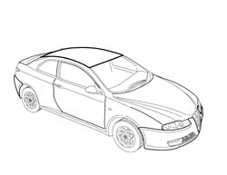
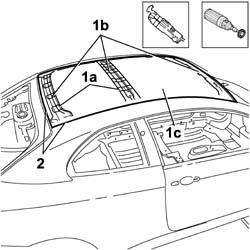
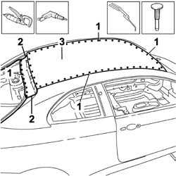
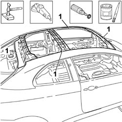
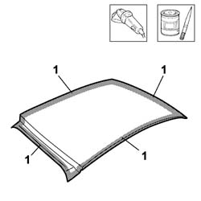
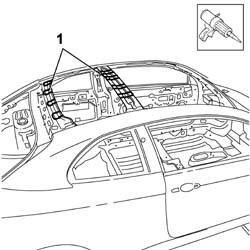
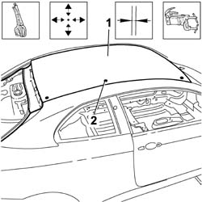
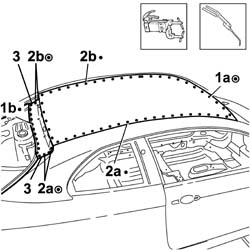
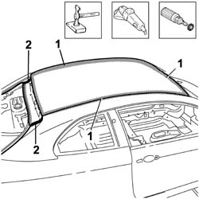
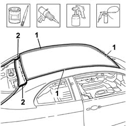

7210E28 ROOF PANEL
- Path
- Procedures > 72 PANELS AND FRAME > 7210 REMOVING REFITTING > 7210E EXTERNAL PARTS > 7210E28 ROOF PANEL
- Kind
- repair procedure (removal / refitting; the operation number is the code)
- Applies to
- all engines; all production periods
- Interactive page
- https://sloeber94.github.io/elrnDB-aGt/en/#/125002035
Applies to: all engines; all production periods
 Removing
Removing
 Refitting
RefittingCheck that the components connected are not distorted by checking the bodyshell alignment measurements using suitable equipment (gauges, templates or jigs).
Straighten the body as necessary.

Applies to: all engines; all production periods
1. Use the vibrating knife with the special blade to cut the sealant (1a) between the ribs (1b) of the roof (1c).
2. Remove the paint from the entire perimeter of the roof using the rotary brush to highlight the spot welds.

Applies to: all engines; all production periods
1. Use the chamfering machine on the spot welds.
Use the drill and chamfer the spot welds not accessible with the chamfering machine.
2. Use the oxyacetylene torch and wire brush to unsolder the brazing at the corners of the roof.
Use the hammer and chisel and remove the spot welds milled previously.
3. Remove the roof from the vehicle.

Applies to: all engines; all production periods
1. Straighten the edges of the roof housing using a hammer and dolly block.
Remove the spot weld residues using a disc grinder.
Use a rotary brush to clean the areas treated previously.
Apply electro-galvanizing paint.

Applies to: all engines; all production periods
Refitting
Removing1. Remove the anti-corrosion treatment from the entire perimeter of the inside and outside of the replacement part using a rotary brush.
Apply electro-weldable paint to the parts involved.

Applies to: all engines; all production periods
1. Renew the sealant between the roof and the ribs.

Applies to: all engines; all production periods
1. Position the replacement part correctly using self-locking clamps.
Fit the tailgate.
Check the alignment and the surrounding gaps.
Use the rule to check the windscreen housing diagonals.
2. Make a few spot welds on the roof.
Remove the tailgate.

Applies to: all engines; all production periods
1. Use the spot welder to weld the roof in the area of the windscreen housing (1a) and the rearscreen housing (1b).
2. Use the spot welder to weld the roof in the arear of the right side panel (2a) and the left side panel (2b).
3. Weld using brass filler and an oxyacetylene torch at the rear corners of the roof.

Applies to: all engines; all production periods
Correct any distortions to the panel using a hammer and dolly block.
1. Use a disc grinder to level the brazing in the areas shown in the diagram.
2. Use a rotary brush to clean the areas involved previously in the welding.

Applies to: all engines; all production periods
1. Apply anti-oxidant protection to the areas involved in the welding.
2. Apply sealant to the areas illustrated in the diagram.
Proceed with the painting stage.
Proceed with the waxing stage.
